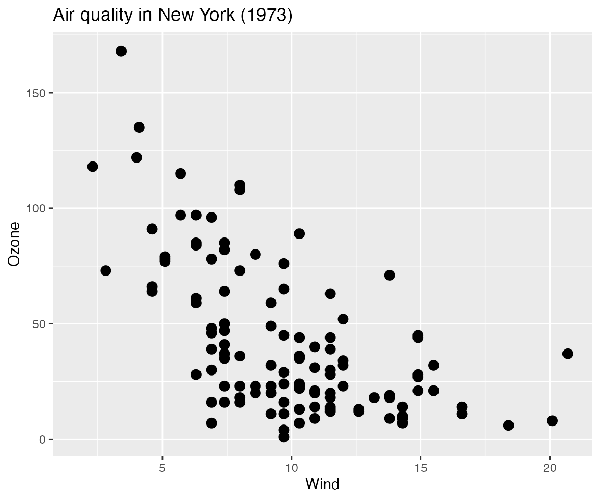
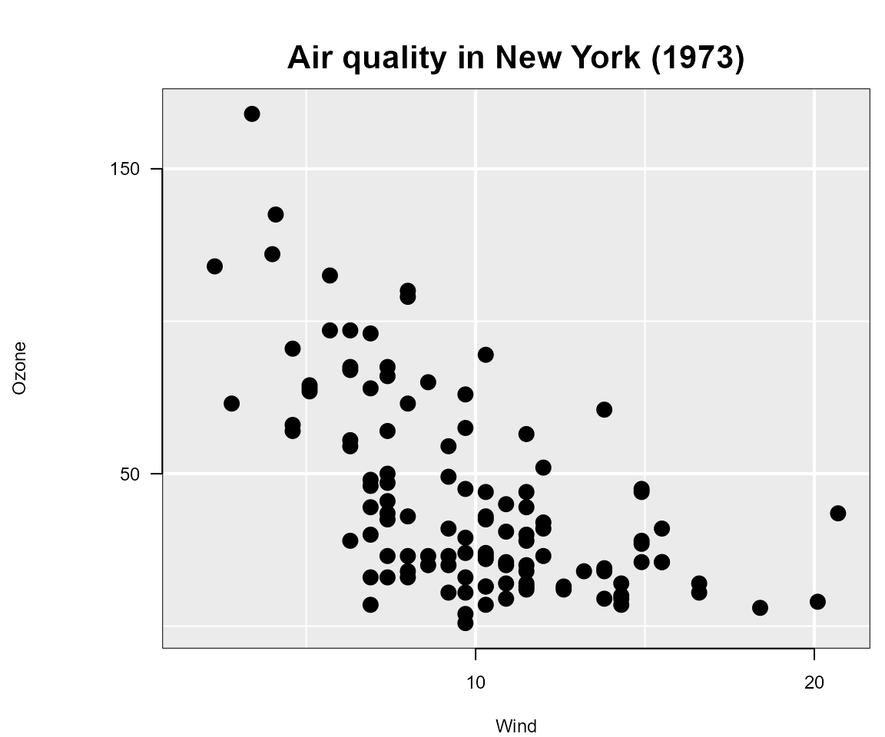
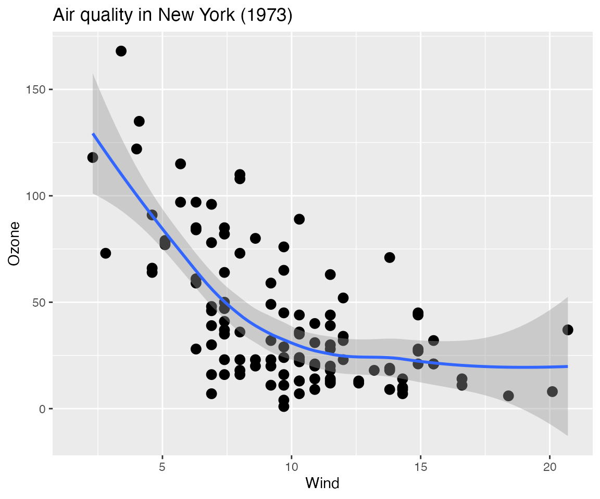
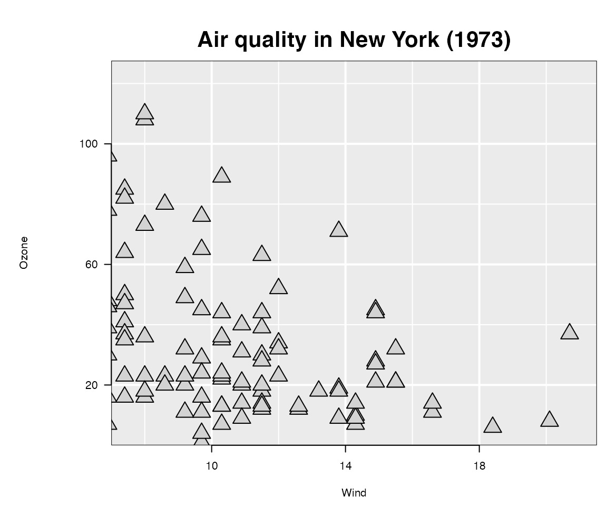
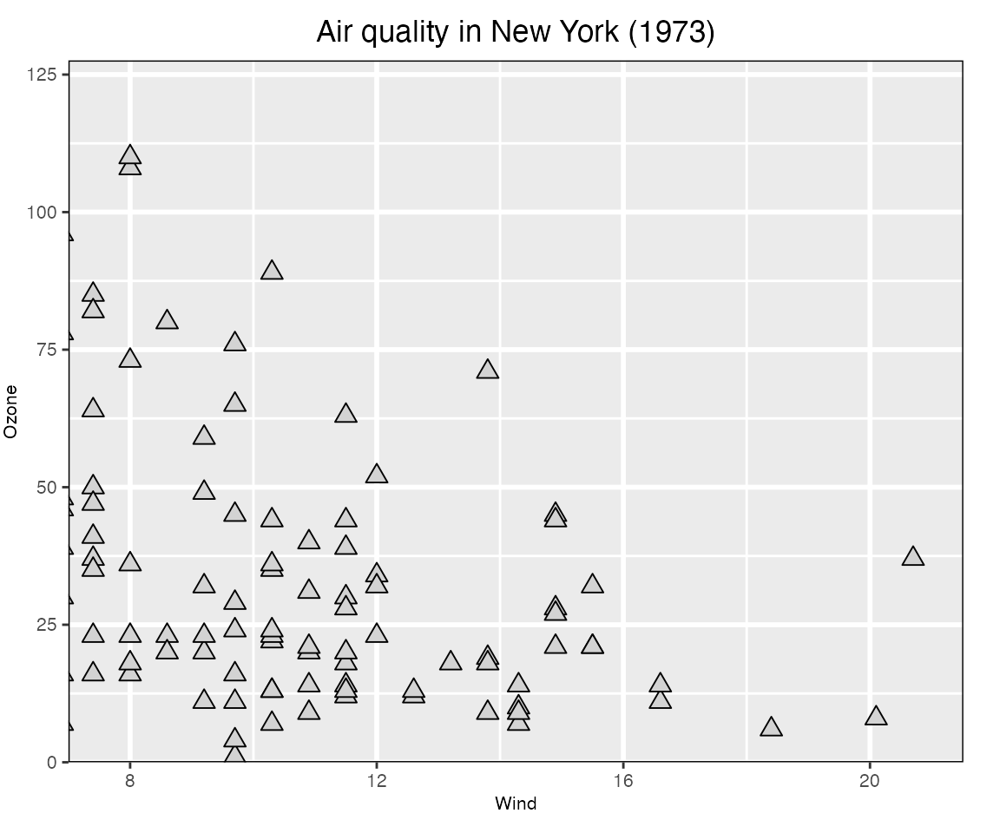
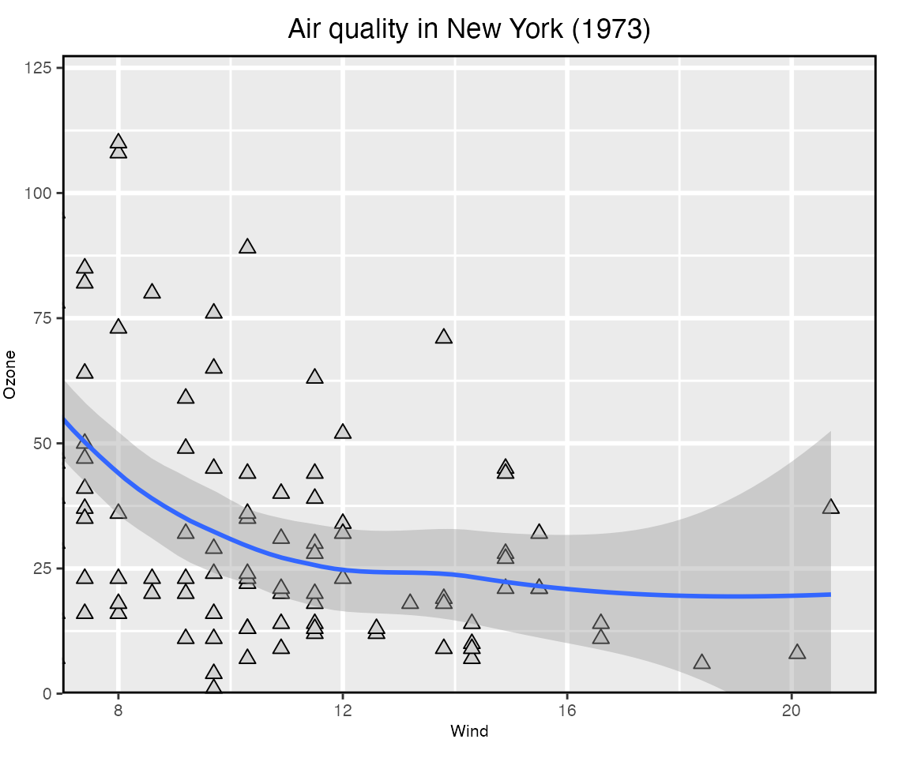

A Grammar Of Interactive Graphics
loon.ggplot
R. W. Oldford and Zehao Xu
2021-09-17
Source:vignettes/grammarOfInteractiveGraphics.Rmd
grammarOfInteractiveGraphics.RmdJust as ggplot2 provides a layered implementation of a grammar of graphics, loon.ggplot provides a layered implementation of a grammar of interactive graphics.
With loon.ggplot, data analysts can easily switch between the elegant and beautiful static graphics of ggplot2 and the powerful direct manipulation interactive graphics of loon, using each where it is most natural.
A working dataset – airquality
To provide a working example, consider the airquality dataset:
data("airquality")
summary(airquality)
#> Ozone Solar.R Wind Temp
#> Min. : 1.00 Min. : 7.0 Min. : 1.700 Min. :56.00
#> 1st Qu.: 18.00 1st Qu.:115.8 1st Qu.: 7.400 1st Qu.:72.00
#> Median : 31.50 Median :205.0 Median : 9.700 Median :79.00
#> Mean : 42.13 Mean :185.9 Mean : 9.958 Mean :77.88
#> 3rd Qu.: 63.25 3rd Qu.:258.8 3rd Qu.:11.500 3rd Qu.:85.00
#> Max. :168.00 Max. :334.0 Max. :20.700 Max. :97.00
#> NA's :37 NA's :7
#> Month Day
#> Min. :5.000 Min. : 1.0
#> 1st Qu.:6.000 1st Qu.: 8.0
#> Median :7.000 Median :16.0
#> Mean :6.993 Mean :15.8
#> 3rd Qu.:8.000 3rd Qu.:23.0
#> Max. :9.000 Max. :31.0
#> It has missing data (in Ozone and Solar.R) and the variable Month appears as numerical. The date information can easily be made more meaningful:
airquality$Date <- with(airquality,
as.Date(paste("1973", Month, Day, sep = "-")))
# Could also look up the day of the week for each date and add it
airquality$Weekday <- factor(weekdays(airquality$Date),
levels = c("Monday", "Tuesday", "Wednesday",
"Thursday", "Friday",
"Saturday", "Sunday"))Month can also be turned it into a factor so that its levels are three character month abbreviations (arranged to match calendar order):
airquality$Month <- factor(month.abb[airquality$Month],
levels = month.abb[unique(airquality$Month)])The data now look like
head(airquality, n = 3)
#> Ozone Solar.R Wind Temp Month Day Date Weekday
#> 1 41 190 7.4 67 May 1 1973-05-01 Tuesday
#> 2 36 118 8.0 72 May 2 1973-05-02 Wednesday
#> 3 12 149 12.6 74 May 3 1973-05-03 ThursdayWith its mix of continuous and categorical variables (some with missing data) this transformed data will be used to illustrate loon.ggplot’s grammar of interactive graphics.
The trick: ggplot() becomes l_ggplot()
The interactive grammar begins by simply replacing ggplot() by l_ggplot(), wherever it appears in the layered grammar. The same arguments (e.g., data, mapping, etc.) and clauses (e.g. geoms, scales, coordinates, etc.) are used, but now to create an interactive plot.
For example,
lgp <- l_ggplot(airquality,
mapping = aes(x = Wind, y = Ozone)) +
ggtitle("Air quality in New York (1973)") +
geom_point(size = 3) Like ggplot(), l_ggplot() produces a data structure containing the information needed to create a plot. No plot is actually yet displayed; rather lgp has the potential to produce a plot on demand.
A look at its class
class(lgp)
#> [1] "l_ggplot" "gg" "ggplot"suggests that it is both an l_ggplot and a ggplot (and gg).
In ggplot2 identical methods have been written for both the plot() and the print() function to show the ggplot on the current device.
In loon.ggplot these functions are different for an l_ggplot:
-
plot(lgp)displays thelgpstructure as a staticggploton the current device -
print(lgp)displays it as an interactiveloonplot in theRsession.
For example, to see the ggplot:
plot(lgp)
And to see the interactive loon plot, simply print it:
lgp # or print(lgp)which will look something like  (as rendered in grid graphics).
Each plot (the static ggplot and the interactive loon plot) presents the same information, but in slightly different form (e.g., different choices on title placement, white space padding, etc.)
Though the data information is identical in both plots, the loon plot appears a little more spartan. This is because an interactive plot is dynamic and can change in real time by direct interaction; it is enough that the analyst appreciates the data content of the plot without too much concern over display details. In contrast, the ggplot is more often meant to be shared in print and so demands more flexibility to lay out its plot elements in an elegant display.
Note: In ggplot2, every time a ggplot is printed, a new plot is produced on the current device. Similarly, in loon.ggplot, every time an l_ggplot is printed, a new (interactive) loon plot is produced; every time it is plotted, a new (static) ggplot is produced.
Programmatic access of the interactive plot
At times, as when creating this document, it will be handy to have programmatic access to the loon plot. This can be done by assigning the loon plot to a variable, say lp, in any one of several different ways:
When it was first printed it, the interactive plot would have returned a string. For example, it was
#> [1] ".l0.ggplot.plot"which is of the form ".lXX.ggplot.plot" where XX is a non-negative integer.
This is the tcltk “path” to the loon plot and uniquely identifies the loon structure. The data structure is now accessed through l_getFromPath(pathname) as below.
lp <- l_getFromPath(".lXX.ggplot.plot") # replace XX by whatever number appearedOf course, this requires you to have noticed and recovered the string pathname for that plot when it first appeared. Fortunately, that is not necessary. In the title bar of the window containing the loon plot, the string following "path: " can also be used. In the present case, this will be of the form ".lXX.ggplot" (as before but without the additional ".plot" suffix). The call
lp <- l_getFromPath(".lXX.ggplot") # replace XX by whatever number appearedwill return the interactive plot as before.
Finally, if you have the foresight to know that you would like to have programmatic access to the interactive plot from the start, you could assign it to a variable when it was first created.
There are two ways to do this.
One is
lp <- print(lgp)The other uses a powerful function called loon.ggplot() (more on this below):
lp <- loon.ggplot(lgp)Note: that unlike l_getFromPath(), either of the above calls will produce a new interactive plot from lgp and assign it to lp.
The loon-ggplot duality
Using l_ggplot() in place of ggplot() extends the graphics grammar of ggplot2 to produce interactive loon plots.
-
use
l_ggplot()in place ofggplot()plotting an
l_ggplotproduces a staticggplotdisplayprinting an
l_ggplotproduces an interactiveloondisplay.
the
l_ggplotis not the interactiveloonplot; it is an enhancedggplotand can be augmented just as any otherggplot.-
Changes to the
ggplothave no effect on the interactive plotFor example,
plot(lgp + geom_smooth()) behaves like any other
ggplotwith no effect on the interactive plot. -
Changes to the interactive
loonplot have no effect on the staticl_ggplotMake whatever changes you like interactively to the
loonplotlp, or programmatically as below:# Change glyph aesthetics of ALL points lp["color"] <- "lightgrey" lp["glyph"] <- "ctriangle" # closed triangle lp["size"] <- 10 # proportional to area in loon # Dynamically change the scaling (magnify or zoom in and out) for (mag in rep(c(0.8, 1, 1.2), times = 5)){ lp["zoomX"] <- mag lp["zoomY"] <- mag Sys.sleep(0.1) # slow down to see effect } # Settle on lp["zoomX"] <- 1.2 lp["zoomY"] <- 1.2 # # Or, similarly, change the location/origin of the plot xlocs <- seq(min(lp["x"]), median(lp["x"]), length.out = 10) ylocs <- seq(min(lp["y"]), median(lp["y"]), length.out = 10) # Dynamically change the origin for (i in 1:length(xlocs)){ lp["panX"] <- xlocs[i] lp["panY"] <- ylocs[i] Sys.sleep(0.1) # slow down to see effect } # and back xlocs <- rev(xlocs) ylocs <- rev(ylocs) # dynamically for (i in 1:length(xlocs)){ lp["panX"] <- xlocs[i] lp["panY"] <- ylocs[i] Sys.sleep(0.1) # slow down to see effect } # Perhaps settle on lp["panX"] <- 7 lp["panY"] <- 0And now observe the effect on each of the plots:
# First the l_ggplot plot(lgp)No change. It is unaffected by any change to the interactive plot.
# Now the l_plot plot(lp)
Reflects the changes made on the interactive plot.
The function loon.ggplot()
Earlier, loon.ggplot() was recommended as a means to produce an interactive plot from an l_ggplot and to assign it to a variable, as in
lp <- loon.ggplot(lgp)This makes it seem essentially equivalent to print(lgp), but it is not.
Instead, loon.ggplot() is a powerful two way bridge between ggplots and loon plots.
When called on
an
l_ggplot(an extendedggplot)loon.ggplot(lgp)produces an interactiveloonplot.-
an interactive
loonplot, it produces a staticggplotloon.ggplot(lp)
This is a
ggplotwith parameters to make it look like theloonplot it was built from (e.g. the title is centred in thisggplot).loon.ggplot()gives us a second way to produce a static version of an interactiveloonplot.plot(lp)produces agridgraphic object (orgrob)loon.ggplot(lp)produces aggplotgraphic object.
Either reproduces the current
loonplot as a static snapshot of its present appearence (ideally wysiwyg).Which is preferred depends on the use intended for the static plot .
The
ggplotversion is easier to work with and trivial to adapt using the grammar.gp <- loon.ggplot(lp) # loon to ggplot class(gp) #> [1] "gg" "ggplot" gp + geom_smooth()
Alternatively, a new interactive plot can be generated from an ordinary
ggplotasnew_lp <- loon.ggplot(gp + geom_smooth())and this interactive plot is turned into a new static
ggplotwith the same function, as shown belowloon.ggplot(new_lp)
Note that the grey polygon emphasizing the confidence region does not appear. It is there, but as a hidden
layerof theloonplot that can be revealed at any time (via thelooninspector or programmatically). The polygon is not shown by default because colours do not (yet) have an alpha channel (for transparency) intcltk.
The bridge: loon.ggplot() turns ggplots to interactive loon plots and loon plots to ggplots.
The interactive grammar
loon.ggplot extends the grammar of graphics by adding several new clauses.
+ linking()
+ linking(linkingGroup = NULL, linkingKey = NULL, linkedStates = NULL, sync = NULL)
loon implements a group-key-state linking model.
Interactive plots having the same linkingGroup are linked, in that each plot changes its display in response to display changes of the linkedStates of any plot in the same linkingGroup. Only those linkedStates in common are changed and display elements are matched by values of the linkingKey.
-
linkingGroupA string naming the group or
NULLfor no linking. -
linkedStatesA character vector of the states to be linked.
By default these include
selected,active, and others peculiar to each type of plot such ascolorandsize. -
linkingKeyA length
ncharacter vector of unique strings, one for each observation; default is"0","1", …,"n-1". -
syncSpecifies the direction of synchronizing the linked states at the time the plot is created.
The value"pull"pulls the values of the linked states from plots in the linking group and assigns them to the new plot; value"push"pushes the newly created plot’s linked states values out to the others in the linking group.Default is
"pull"unless some aesthetics matching the linked states are specified in the plot creation; then the default will be"push".
Each plot will propogate, and respond to, only changes in those states named in its linkedStates. Display elements associated with the unique set of keys in each plot’s linkingKey will change together.
+ hover()
+ hover(itemLabel = NULL, showItemLabels = NULL)
Provides a pop up display as the mouse hovers over a plot element in the interactive plot.
-
itemLabelA character vector of length
nwith a string to be used to pop up when the mouse hovers above that element. -
showItemLabelsA single logical value:
TRUEif pop up labels are to appear on hover,FALSE(the default) if they are not.
+ selection()
+ selection(selected = NULL, selectBy = NULL, selectionLogic = NULL)
Set which elements (i.e., observations) are "selected". These are shown highlighted in the plot.
-
selecteda logical or a logical vector of length n that determines which observations are selected (TRUE and hence appear highlighted in the plot) and which are not. Default is FALSE and no points are highlit.
-
selectByA string determining how selection will occur in the interactive plot. Default is
"sweeping"where a rectangular region is reshaped or “swept” out to select observations.; alternately"brushing"will indicate that a fixed rectangular region is moved about the display to select observations. -
selectionLogicOne of
"select"(the default),"deselect", and"invert". The first highlights observations as selected, the second downlights them, and the third inverts them (downlighting highlit observations and highlighting downlighted ones).
+ active()
+ active(active = NULL, activeGeomLayers = NULL)
Set active and/or activeGeomLayers
-
activea logical, or a logical vector of length
n, determining which observations are active (hence appear in the plot) and which are inactive (FALSEand hence do not appear). Default isTRUE. -
activeGeomLayersdetermine which geom layer is interactive by its
geom_...position in the grammar of the expression. Currently, onlygeom_point()andgeom_histogram()can be set as the active geom layer(s) so far. (N.B. more than onegeom_point()layer can be set as an active layer, but only onegeom_histogram()can be set as an active geom layer and it can be the only active layer)
+ zoom()
+ zoom(layerId = NULL, scaleToFun = NULL)
Change the visible plot region by scaling to different elements of the display.
-
layerIdnumerical; which layer to scale the plot by. If the layerId is set as
NULL(default), the region of the interactive graphics loon will be determined by the ggplot object (i.e.coord_cartesian,xlim, etc); else one can usescaleToFunto modify the region of the layer. -
scaleToFunscale function to be used. If
NULL(default), based on different layers, different scale functions will be applied. For example, if the layer is the main graphic model, i.e.l_plotl_hist, then the defaultscaleToFunisl_scaleto_plot; else if the layer is a generall_layerwidget, the defaultscaleToFunwould beloon::l_scaleto_layer.If it is not
NULL, any of the followingscaleToFunfunctions could be usedscale to Subfunction plot l_scaleto_plot world l_scaleto_world active l_scaleto_active selected l_scaleto_selected layer l_scaleto_layer Alternatively,
scaleToFuncan be any function whose arguments match those of the functions above.
+ interactivity()
+ interactivity(linkingGroup, linkingKey, linkedStates, sync, # linking
active, activeGeomLayers, # active
selected, selectBy, selectionLogic, # selection
layerId, scaleToFun, # zoom
itemLabel, showItemLabels, # hover
... )Set interactive components (e.g. linking, selection, etc) in one clause. All named arguments are as described in the other clauses.
-
...other named arguments to modify loon plot states. Seel_info_states().
The trick: l_ggplot() becomes ggplot()
We began with the recommendation that to have interactive ggplots, all we need do is replace ggplot() in the grammar by l_ggplot() with all the usual arguments. All clauses of the ggplot grammar can be used as before plus the new interactive clauses. The result is an l_ggplot that prints as an interactive loon plot and plots as a ggplot2 plot. The advantage is that using l_ggplot() makes it clear that an ordinary ggplot is not being produced and emphasizes the loon-ggplot duality.
The final trick is that, with loon.ggplot, one does not actually need to use l_ggplot(), simply use ggplot(). If no clauses are interactive, then an ordinary ggplot will be produced; if an interactive clause is added, an l_ggplot will be produced.
For example, the following produces an ordinary ggplot.
ggp <- ggplot(airquality, mapping = aes(Solar.R, Temp)) +
geom_point(size = 3) +
ggtitle("Air quality in New York (1973)")
# which is an ordinary ggplot and prints as one
ggp Adding an interactive clause, turns the result into an
Adding an interactive clause, turns the result into an l_ggplot.
lggp <- ggp +
linking(linkingGroup = "airquwqality") +
selection(selected = airquality$Solar.R < 100) +
zoom(layerId = 1, scaleToFun = l_scaleto_selected) +
geom_smooth()
# which is an interactive loon and prints as one
lggp
#> [1] ".l3.ggplot.plot"
#> attr(,"class")
#> [1] "l_plot" "loon"
# but plots as a ggplot
plot(lggp)
Note that the interactive effects do not appear in plot(l_ggp); this is because this is still an l_ggplot. To print the interactive plot, a handle to it must be found, for example using l_getFromPath(".l3.ggplot")
l_ggp <- l_getFromPath(".l3.ggplot")
# Alternatively, the loon plot could have been captured when first
# created by using loon.ggplot(lggp) in stead of print(lggp) as follows
#
# l_ggp <- loon.ggplot(lggp)
#
# Either way, it will look like the following as a grid graphics plot
plot(l_ggp)
# and as below when presented as a ggplot
loon.ggplot(l_ggp)
The final trick is that either l_ggplot() or ggplot() cam be produce interactive plots using the ggplot grammar.
It’s largely a matter of taste.